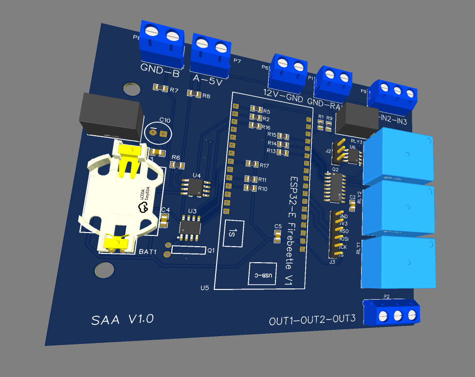
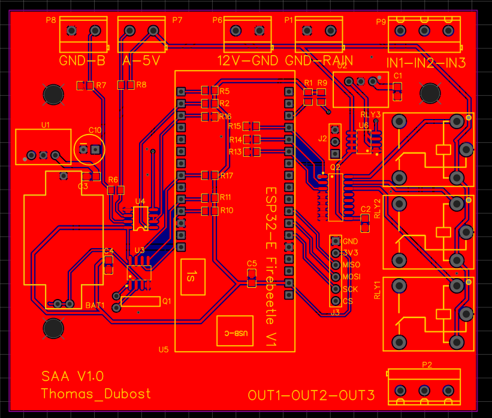
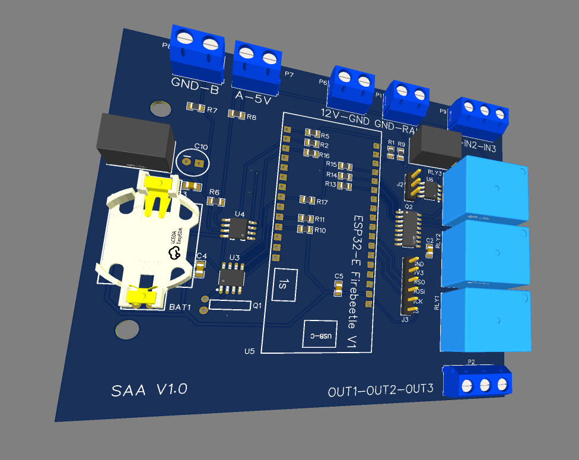
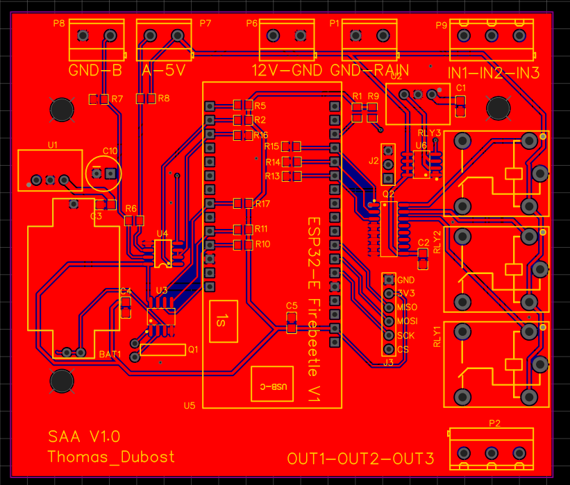

Etant adepte de jardinage, je me retrouve souvent face à des problèmes au niveau de l'arrosage de mon potager : sois je ne suis pas la pour arroser, soit j'oublie
J'en ai vu une problématique, je me suis donc mit dans l'idée d'y trouver une solution
Je dévellope actuellement un système d'arrosage automatique qui n'arrose seulement si le sol est sec.
L'idée est de créer une station qui gère un réseau d'électrovannes pilotables à partir d'un calculateur.
Le cahier des charges est beaucoup plus complexe qu'un simple capteur d'humidité relié à un arduino :
je suis actuellement sur la conception électronique d'une station d'arrosage :
la station est capable de :
 



c'est mon premier projet sérieux qui implique des enjeux de sécurité et écologiques
pour la conception de la carte, j'ai concu certaines parties dans le but de sécuriser un maximum le déclenchement des électrovannes en cas de problème technique
j'ai aussi optimisé la consommation énergétique en commutant l'alimentation de certaines fonctions secondaires, inutiles sauf au moment de l'arrosage
pour la suite du projet, je prévois d'y effectuer la partie installation électrique et tuyauterie, puis avant de concevoir la partie informatique , prendre des mesures de terrain pour évaluer la réactivité de mon système
ce projet m'a permis de progresser dans différentes catégories :